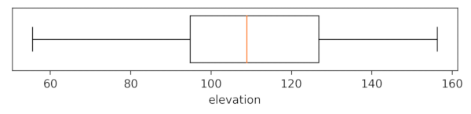

r.boxplot draws boxplots of the raster values of an input raster map. The user has the option to define a zonal (categorical) map. In that case, a boxplot will be drawn for each zone, using the values of the input raster that fall within that zone.
If there is a zonal map, the user can add a line and band to represent the median and interquartile range (IQR) of the input layer. Note that all values of the input raster (within the region's extent) are used to compute the median and IQR. If the zones of the zonal map cover only part of the region, the user can mask out the non-covered parts of the input map first by means of r.mask. That will result in an IQR and median representing the values that fall within the zones of the zonal map only. Otherwise, the computational region can be changed to fit the extent of the zonal map with g.region
By default, the resulting plot is displayed on screen. However, the user can also save the plot to file using the output option. The format is determined by the extension given by the user. So, if output = outputfile.png, the plot will be saved as a PNG file.
The whiskers extend to the most extreme data point, which is no more than range ✕ the IQR from the box. By default, a range of 1.5 is used, but the user can change this. Note that range values need to be larger than 0.
By default, outliers are not included in the plot. Set the o flag to include them in the plot. To also create a point vector map with the locations of the outliers, the user needs to provide the name of the output map using map_outliers.
There are a few layout options, including the option to rotate the plot and the x-axis labels, print the boxplot(s) with notches, sort the boxplot from low to high (ascending) or from high to low (descending) median, color the boxplots according to the corresponding categories of the zonal raster, set the type and color of the outliers, set the color and width of the median line(s), set the color and transparency of the raster's median line and IQR band, and set the width of the boxplots.
The zonal map needs to be an integer map. If it is not, the function will exit with the error message, 'The zonal raster must be of type CELL (integer)'.
If the c flag is used, the bxp_color and median_color are ignored, even if set by the user. The option to color boxploxs using the colors of the zonal raster categories (c flag) only works if the zonal map contains a color table. If it does not, the function exits with the error message that 'The zonal map does not have a color table'. If the user thinks there is a color table, run r.colors.out and check if the categories are integers. If not, that is the problem. If they are all integers, you probably have caught a bug.
The module respects the mask (if set), and the region settings. This means you can quickly change the area for which to create a boxplot by simply changing the region and/or setting a (different) mask.
g.region raster=elevation r.boxplot -h input=elevation plot_dimensions="7,1" output="r_boxplot_01.png"

r.boxplot -r input=elevation zone=landclass96 output="r_boxplot_02.png"
r.boxplot -o bx_sort=ascending input=elevation zones=landclass96 output="r_boxplot_03.png" map_outliers="outliers"

Below, part of the landclass96 raster map is shown, with the vector point layer with location of outliers on top. Curiously, for some lakes, only part of the raster cells are outliers.
r.boxplot -c bx_sort=ascending fontsize=11 input=elevation zones=landclass96 output="r_boxplot_04.png"
r.boxplot -c input=elevation zones=landclass96 raster_statistics=median,IQR
Note, if the zones of your zonal map do not cover the entire area, you may want to use r.mask to mask out the non-covered parts of the input map, or alternatively, create a new input raster with only values within the zones of the zonal layer.